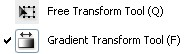

-
Timeline
The Timeline organizes and controls a document’s content over time in layers and frames. Like films, Flash Professional documents divide lengths of time into frames. Layers are like multiple film strips stacked on top of one another, each containing a different image that appears on the Stage. The major components of the Timeline are layers, frames, and the playhead. Layers in a document are listed in a column on the left side of the Timeline. Frames contained in each layer appear in a row to the right of the layer name. The Timeline header at the top of the Timeline indicates frame numbers. The playhead indicates the current frame displayed on the Stage. As a document plays, the playhead moves from left to right through the Timeline. The Timeline status displayed at the bottom of the Timeline indicates the selected frame number, the current frame rate, and the elapsed time to the current frame.
-
Marquee Selection Tools 
The following tools allow you to select regions in your image to alter, copy, move, and apply filters.
Category: Selection Tools -
Lasso tools

The lasso Selection Tools are similar to the marquee tools, except that the lasso tools give you ultimate freedom in terms of the shape of your selection. There are three different lasso tools:
A note about lasso tool options: When extracting part of an image from its background, the result will be choppy and rough around the edges unless you adjust the feather value in the options bar. This fades the edges you create and can smooth the region into its new background.
Category: Selection Tools